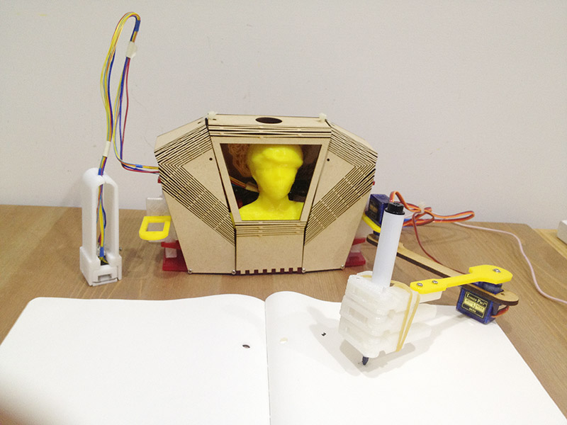

Original Fab Academy page: https://fabacademy.org/2015/as/students/huang.yi-pin/finalProject.html
18 - Final Project
My final project is Writing Automaton. I like this project very much because I can integrate lots of skill I learn in Fab Academy.
Demonstration
Arm Design
Arm design is the most important part. I study arm structure by using paper prototype. Hand made prototype helps me understand where to put servo and how they move.

Automaton Body
The design goal of body should have enough space for at least 2 curcuit boards and 2 servo motors. I create a 3D model to study the shape, space and mechanical structure.

A plugin Flattery in sketchup is a nice tool to help unfold a 3D model to paper craft. Paper craft layout can be saved as SVG, but I should add some screw holes and latches manually in illustrator. The first prototype is shown below:

There is not enough space for servo motor to LIFT the arm. And the bending curve of MDF can be easily break when I assembled parts.
I did some experiments on laser curve bent wood with MDF. Hinge gaps are too big in the first generation, so that it sometimes slplited when I bent. The 2nd generation is the worst. The 3rd one is not bad.

Assembling:


Shoulder joint is recommended using a 3D printed part. Because 3D part has some tolerance.

Hand
I think that will be great to create a hand.


Hand is cool, but 3d printed parts are to heavy. It causes arm unable to lift up.
Input devices
I hacked a mouse to get an optical sensor, and redesign it to become a optical sensor pen.
There was a small lens inside optical mouse. I used wire saw to cut the size I want. In order to make it work, the relationship among red LED, optical sensor and lens can not be changed.


If it is possible, measure the parts with a calipers.


Mechnical test. I tried to add a switch in my input device. The original idea is like when I push this pen (which means when I am writing), Writing Automaton's arm will put on writing surface. vice versa, when I lift the pen, Automaton's arm also lifts.

I desoldered the optical sensor very carefully. Luckly, I found snesor(PAW3512DK)'s scheme and data sheet on Internet.

Simulating a cursor. I am lucky again, it works!

Coding
I developmented the system with Processing and Arduino IDE. Most of the computing is done in Processing. I setup serial communication between Processing and the board. The only thing my board need to do is assign angles value to each motor.
1. Angle value in Processing:

2. Programming on my board:
Board design
Board design is a part of look and feel in my project. I put the board on the back of Writing Automaton. I created 2 boards, each of them suppose to control one arm.
- PCB(A).sch / PCB(A).brd
- PCB(B).sch / PCB(B).brd


The back of Writing Automaton:

Materials
1. M2 screw
2. MDF
3. Acrylic
4. Attiny44 x 2, capacitors, and reisistors.
5. 9g servo motor x 3 (at least)
Source files
- Automaton Body 2D
- Automaton Body 3D
- Shoulder
- Hand
- Optical Sensor holder
- PCB(A).sch / PCB(A).brd
- PCB(B).sch / PCB(B).brd
- Arm control / GUI by Processing